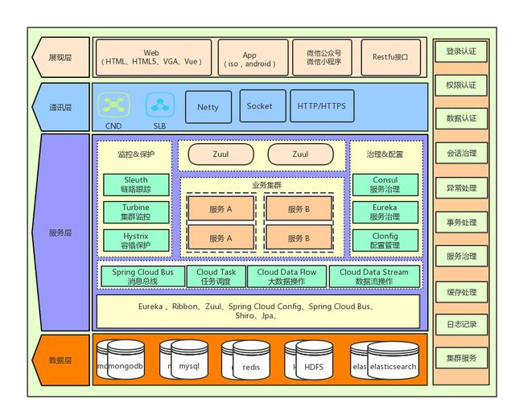
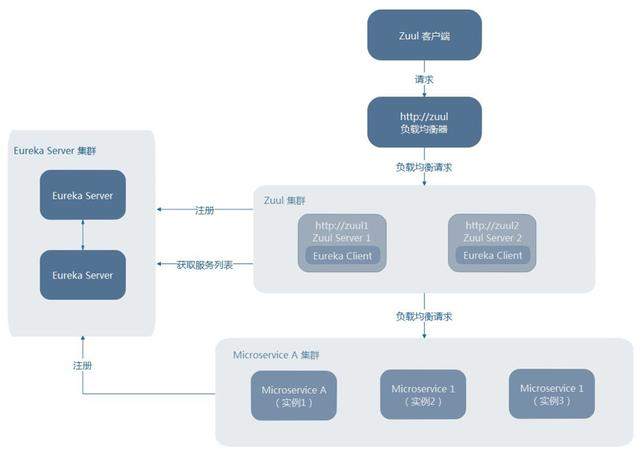
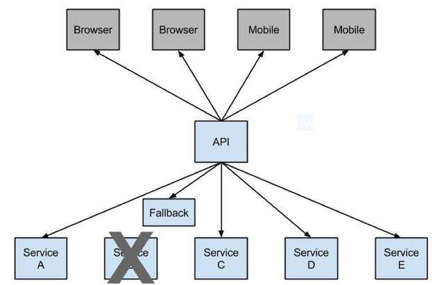
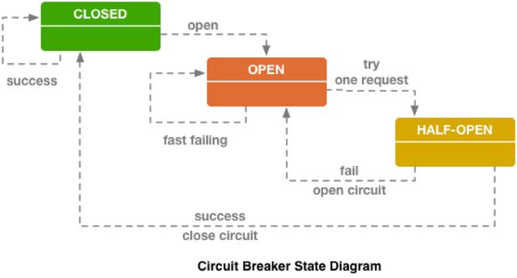
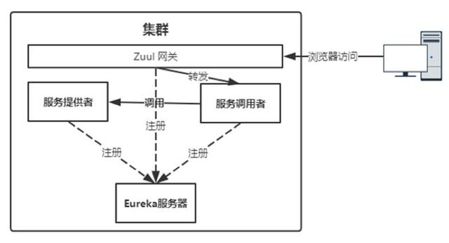
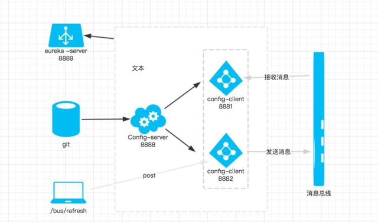

Java系统架构设计（通用版）¶
系统架构图¶

四层架构设计¶
展示层¶
- Web前端 基于HTML/HTML5/Vue/CSS3开发web前端页面，兼容主流浏览器。展现层和数据层完全分离，通过跨域实现前后端数据通信。
- APP android，ios 基于原生开发。在app端实现https链路请求优化，做防盗链和DNS劫持处理。
- 微信公众号/微信小程序 更新业务需要，将部分数据以微信公众号+H5的方式展现；涉及硬件设备控制功能的系统部分模块采用微信小程序，增加用户操作体验和访问便捷性。
- Restful接口 基于特定业务，采用Restful标准接口，对外提供数据服务。
通讯层¶
- 基于阿里云CDN实现静态数据加速；
- 基于阿里云SLB，实现服务器负载均衡；
- 基于TCP/HTTP/HTTPS 三种通信方式，实现前后端数据通信。其中，TCP基于Netty实现；
服务层¶
- 核心业务基于Spring Cloud 架构实现微服务化。附图 
- Spring Cloud是一个基于Spring Boot实现的云应用开发工具，它为基于JVM的云应用开发中的配置管理、服务发现、断路器、智能路由、微代理、控制总线、全局锁、决策竞选、分布式会话和集群状态管理等操作提供了一种简单的开发方式。
- 微服务是可以独立部署、水平扩展、独立访问（或者有独立的数据库）的服务单元，springcloud就是这些微服务的大管家，采用了微服务这种架构之后，项目的数量会非常多，springcloud做为大管家需要管理好这些微服务。
- 相关的组件包括如下：
- Netflix Eureka：服务中心，云端服务发现，一个基于 REST 的服务，用于定位服务，以实现云端中间层服务发现和故障转移
- Netflix Hystrix： 熔断器，容错管理工具，旨在通过熔断机制控制服务和第三方库的节点,从而对延迟和故障提供更强大的容错能力。  
- Netflix Zuul： 是在云平台上提供动态路由,监控,弹性,安全等边缘服务的框架。Zuul 相当于是设备和 Netflix 流应用的 Web 网站后端所有请求的前门，具有拦截和路由功能。 
- Netflix Archaius： 配置管理API，包含一系列配置管理API，提供动态类型化属性、线程安全配置操作、轮询框架、回调机制等功能。可以实现动态获取配置，原理是每隔60s（默认，可配置）从配置源读取一次内容，这样修改了配置文件后不需要重启服务就可以使修改后的内容生效，前提使用archaius的API来读取。
- Spring Cloud Config： 俗称的配置中心，配置管理工具包，让你可以把配置放到远程服务器，集中化管理集群配置，目前支持本地存储、Git以及Subversion。 
- Spring Cloud Bus： 事件、消息总线，用于在集群（例如，配置变化事件）中传播状态变化，可与Spring Cloud Config联合实现热部署。
- Spring Cloud Sleuth： 日志收集工具包，封装了Dapper和log-based追踪以及Zipkin和HTrace操作，为SpringCloud应用实现了一种分布式追踪解决方案。
- Spring Cloud Task： 主要解决短命微服务的任务管理，任务调度的工作，比如说某些定时任务晚上就跑一次，或者某项数据分析临时就跑几次。
数据层¶
- mongodb：存储非结构化、关联性弱的业务数据。如，控制器下发的指令数据，监测设备收集的传感器数据，
- mysql：存储事务性数据，以及关联性将强的数据。如，订单、资金、交易数据；
- HDSF：存储监控设备上传的图片和视频，以及报表文件；
- ElasticSearch：实现ELK，存储日志数据；
其他¶
-
认证系统 采用双token的方式完成jwt。其中accessToken 用于用户身份认证。refreshToken用于当accessToken失效时重新生成。
- 用户登录
Title: 用户登录 用户->zuul网关: 登录 zuul网关->认证微服务: 登录 认证微服务-->>zuul网关: 返回token accessToken refreshToken zuul网关-->>用户:登录成功 用户-->>用户:存储token 认证微服务-->>认证微服务:验证 认证微服务-->>认证微服务:生成token -
token认证访问（accessToken有效）
-
token认证访问（accessToken失效，refreshToken有效）
- accessToken和refreshToken 都失效
- 日志系统 日志集中化管理，采用ELK解决方案。
- Elasticsearch：是个开源分布式搜索引擎，提供搜集、分析、存储数据三大功能。它的特点有：分布式，零配置，自动发现，索引自动分片，索引副本机制，restful风格接口，多数据源，自动搜索负载等。
- Logstash ：主要是用来日志的搜集、分析、过滤日志的工具，支持大量的数据获取方式。一般工作方式为c/s架构，client端安装在需要收集日志的主机上，server端负责将收到的各节点日志进行过滤、修改等操作在一并发往elasticsearch上去。
- Kibana ：也是一个开源和免费的工具，Kibana可以为 Logstash 和 ElasticSearch 提供的日志分析友好的 Web 界面，可以帮助汇总、分析和搜索重要数据日志。
- 会话治理 此处的会话是指Netty 会话管理。实现Channel自定义会话管理，如会话监控、会话超时、会话重建等。
- DNS劫持处理 移动端产品在实际用户环境下会面临 DNS 劫持、耗时波动等问题，这些 DNS 环节的不稳定因素，导致后续网络请求被劫持或是直接失败, 对产品的用户体验产生不好的影响。 DNS 有 LocalDNS VS HTTP DNS之分 在长期的实践中，互联网公司发现 LocalDNS 会存在如下几个问题：
- 域名缓存: 运营商 DNS 缓存域名解析结果，将用户导向网内缓存服务器;
- 解析转发 & 出口 NAT: 运营商 DNS 转发查询请求或是出口 NAT 导致流量调度策略失效; 为了解决 LocalDNS 的这些问题，业内也催生了 HTTP DNS 的概念，它的基本原理如下: 原本用户进行 DNS 解析是向运营商的 DNS 服务器发起 UDP 报文进行查询，而在 HTTP DNS 下，我们修改为用户带上待查询的域名和本机 IP 地址直接向 HTTP WEB 服务器发起 HTTP 请求，这个 HTTP WEB 将返回域名解析后的 IP 地址。 比如 DNSPod 的实现原理如下:（附图） 相比 LocalDNS, HTTP DNS 会具备如下优势: 根治域名解析异常: 绕过运营商的 DNS，向具备 DNS 解析功能的 HTTP WEB 服务器发起查询;
- 调度精准: HTTP DNS 能够直接获取到用户的 IP 地址，从而实现准确导流;
- 扩展性强: 本身基于 HTTP 协议，可以实现更强大的功能扩展;
认证系统¶
- 用户登录